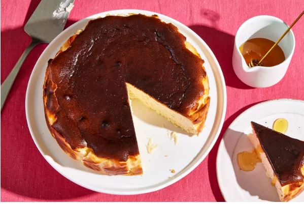
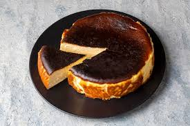

Directions
Preheat a large (6-quart or larger) air fryer to 375°F, if preheating is suggested by manufacturer. Crumple a sheet (about 18 inches long) of parchment paper into a ball, then unroll; press sheet into a 6-inch springform pan or cake pan. Set aside.
While air fryer preheats, beat cream cheese, granulated sugar, and brown sugar with a stand mixer fitted with a paddle attachment on low speed until completely smooth and sugar has dissolved, about 1 minute, stopping to scrape down sides as needed. Add eggs, 1 at a time, beating on low speed until just incorporated before adding next egg. Stop and scrape down sides and bottom of bowl. Add whipping cream, lemon juice, salt, and vanilla to cream cheese mixture; beat on low speed until just combined, about 15 seconds. Sprinkle flour over cream cheese mixture; beat on low speed until just combined, about 20 seconds.
Place a fine mesh strainer over a medium or large bowl or liquid measuring cup. Working in batches, if needed, pour cheese cream mixture through strainer, pressing and scraping bottom of strainer with a rubber spatula until most of the mixture has strained through (some thicker bits may remain). Discard solids. Pour strained mixture into prepared cake pan.
Remove basket from preheated air fryer; using tongs, if desired, carefully lower cheesecake in pan into basket (using 1 or 2 tongs helps to keep hands from getting close to hot basket). Return basket to air fryer; cook at 375°F for 28 minutes. Remove basket from air fryer, and check to see if cheesecake center is still jiggly or the edges around top of cake appear wet. If so, continue cooking at 375°F for 4 to 6 minutes. Cheesecake is done when the top is very dark brown, the entire cheesecake moves together when jiggled, and the top of the cake slides around only slightly.
Remove cheesecake in pan from air fryer basket; transfer to a wire rack, and let cool completely, about 1 hour. Transfer cheesecake in pan to refrigerator; chill completely, at least 4 hours or up to 12 hours. Loosen sides of springform pan, and slide cheesecake out from pan. Gently remove parchment paper from cake. Drizzle with honey, and serve. Cheesecake may be stored loosely covered or in an airtight container in refrigerator up to 3 days.